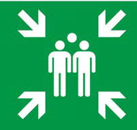

Emergency signs
These signs give instructions on what to do, especially in emergencies like accidents. They show safe places nearby or directions to get to safety or find helpful equipment. These signs include things like emergency phones and first aid kits. They are rectangular with white pictures on a green background or green pictures on a white background as seen in Figure 15.

Emergency exit

Emergency assembly point

Emergency telephone
Eye washing station
Activity 11
1.
Use the library or online sources to search for information about prohibition and emergency signs, and their meanings.
2.
Among the signs you observed, which ones are found in your surroundings?